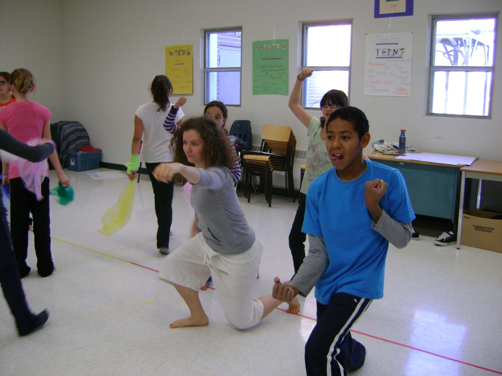
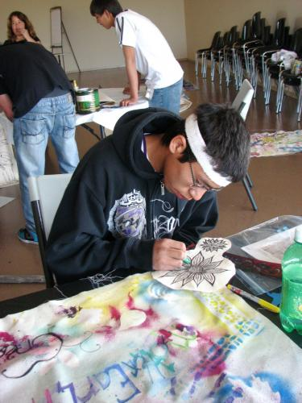

Arts & Learning
New!

Middle Years Arts Education

"Inspiring Movement Through Dance"
How can we inspire our students to move with confidence, to express themselves through dance and to simply begin to move more throughout the day?
Integrated Arts Ed Project
the importance of creative thinking
inclusive collaboration
risk taking and experimentation
the value of artist/teacher/student partnerships
using the language and vocabulary of the Arts
Story through Dance, Voice & Drum from Sherron Burns on Vimeo.
Big Ideas in Arts Education:
Multiple perspectives open my thinking
Imagination can be developed
Understanding leads to empathy
My ideas have value
I value the contributions of others
Expression can take many forms
Mistakes are important & lead to persistance
I can think critically, contextually and creatively
Multiple intelligences are engaged
Cultural explorations are authentic and meaningful
Inquiry process leads one deeper
Outcomes & Assessments reveal student learning
Differentiated Instruction meets student need
This site is managed by Sherron Burns, Arts Education Consultant for Living Sky School Division no 202.
- Login to post comments